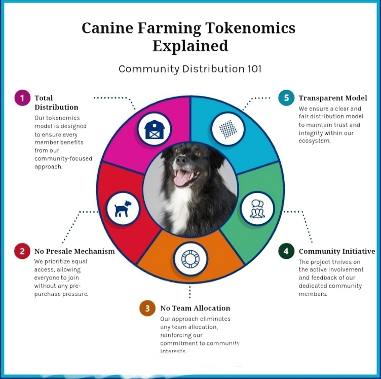

About Canine Farming
Canine Farming is a community-driven meme coin with a mission to unleash the power of memes within the cryptocurrency space. We believe in the potential of humor, virality, and a strong community to revolutionize the way we interact with crypto. With a limited supply of 1 billion $CFM tokens circulating on the SunPump.meme network, Canine Farming offers a unique opportunity to join a meme revolution.
Tokenomics
Canine Farming boasts a transparent token distribution with a total supply of 1 Billion $CFM tokens. All tokens are currently circulating on the SunPump.meme network, ensuring fair access for everyone. As a community-driven project, $CFM is designed to empower our passionate community.
Roadmap
Phase 1: Unleashing the Pack (Current)
- Secure a strong community presence on social media platforms.
- Launch an aggressive marketing campaign to raise awareness for Canine Farming.
- Secure listings on major cryptocurrency exchanges.
Phase 2: Building the Ecosystem (Next Steps)
- Explore potential partnerships to expand utility and reach.
- Develop innovative features and functionalities for Canine Farming.
How To Buy
Buy NowJoin the Pack
Become a part of the Canine Farming revolution! Join our vibrant community of meme enthusiasts and contribute to the growth of our decentralized project. Together, we'll unleash the power of memes and create a unique cryptocurrency experience.
Disclaimer
Canine Farming is a meme coin and involves high-risk investments. The price of meme coins can fluctuate rapidly and unpredictably. There is no guarantee of profit, and you could lose your entire investment.